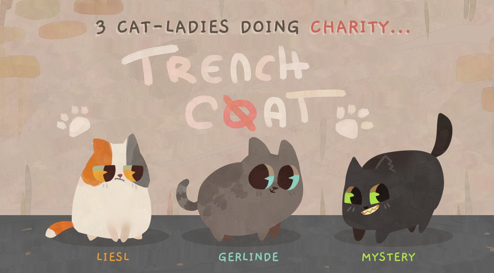
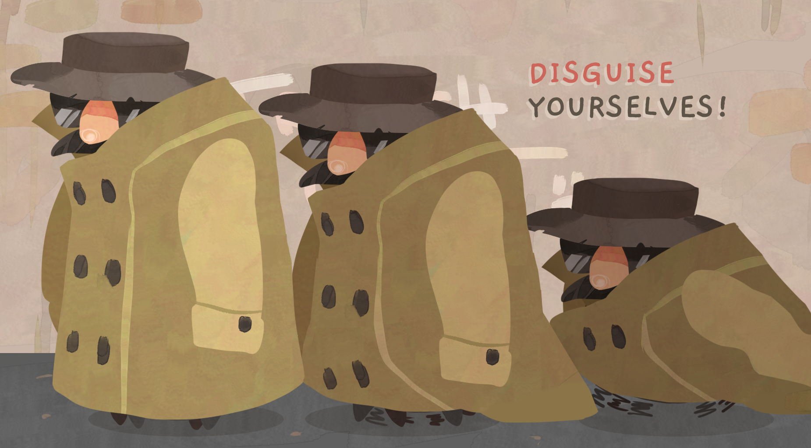
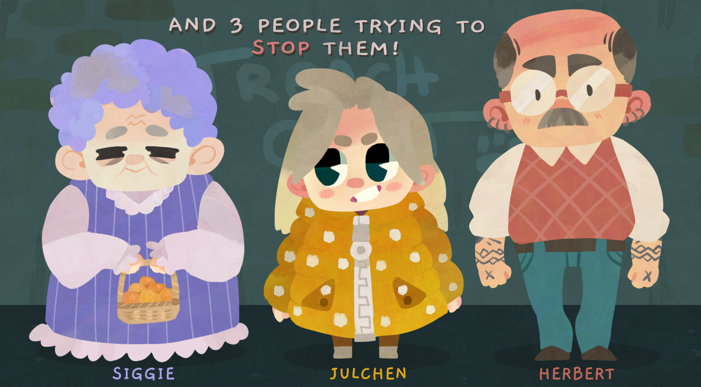
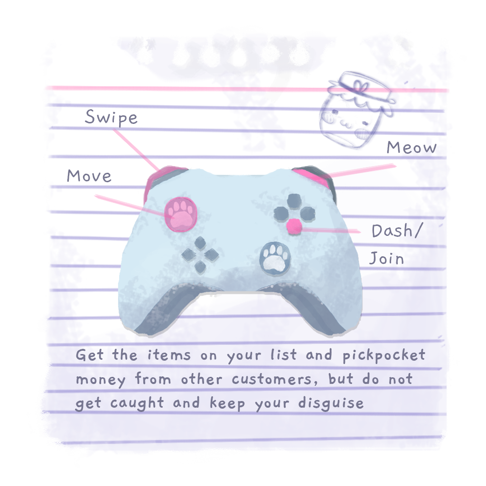
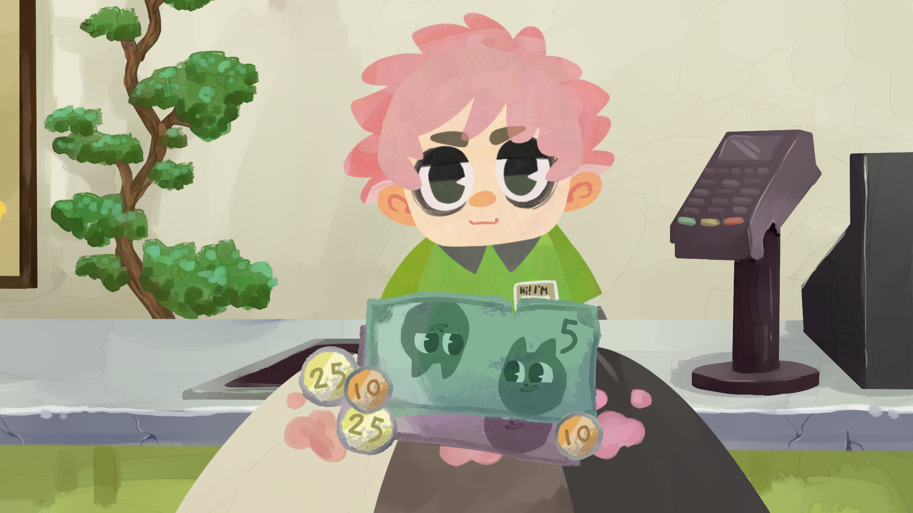
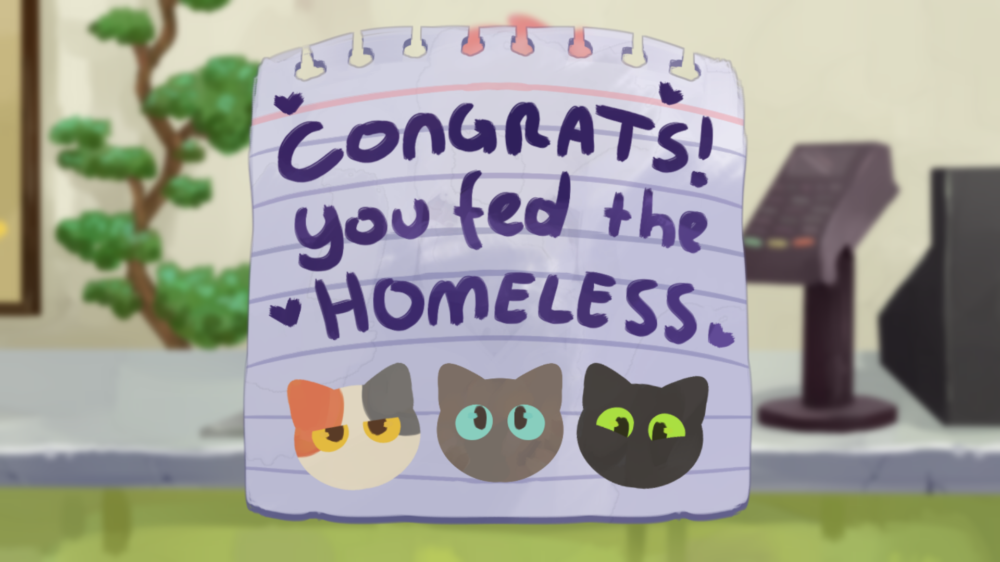

About the Project
Trenchc(o)at is a simple, fast 3 player mutiplayer game, where players collaborate in buying items on a shopping list. They have to find their way through a store together in the trenchcoat, or move quicker by going alone, with the risk of being caught. Players collect items by taking them from the shelves and dragging them into the coat, and in order to pay, they have to pickpocket the NPCs on the map. These NPCs also become suspicious if they see a cat outside of the trenchcoat, and the players will lose if the NPCs get suspicious enough.
Key Features
- 3 player local multiplayer
- cats can walk alone and have to work together stacked in a trenchcoat
- NPCs wander the store and become suspicious of the cats
- cats can collect items from the shelves ...
- ... and steal money from the NPCs
Development Process
Trenchc(o)at was created during a 48 hour game jam at the FH Salzburg, the 11th MMArmelade.
Technologies Used
- Unity 6 Game Engine
- C# Programming Language
Team
- Sina Anders 2D Artist
- Bernadette Erkinger 2D Artist
- Eva Klotz 2D Artist
- Isabelle Posch 2D Artist
- Elias Tieber Audio
- Alexander Gewald Programming
- David Märzendorfer Programming
- Piet Koller Programming
- Kilian Programming
- Mara Schmid Programming